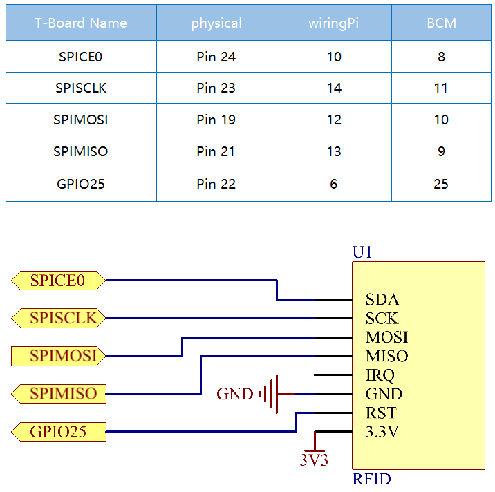

Nota
Ciao, benvenuto nella Community su Facebook per gli appassionati di SunFounder Raspberry Pi, Arduino e ESP32! Approfondisci il tuo utilizzo di Raspberry Pi, Arduino ed ESP32 insieme ad altri appassionati.
Perché unirti a noi?
Supporto esperto: Risolvi i problemi post-vendita e le sfide tecniche con l’aiuto della nostra community e del team.
Impara e Condividi: Scambia consigli e tutorial per migliorare le tue competenze.
Anteprime Esclusive: Ottieni l’accesso anticipato a nuovi annunci di prodotti e anticipazioni.
Sconti Speciali: Approfitta di sconti esclusivi sui nostri prodotti più recenti.
Promozioni e Giveaway Festivi: Partecipa a promozioni e concorsi in occasione delle festività.
üëâ Pronto a esplorare e creare con noi? Clicca su [Qui] e unisciti oggi stesso!
2.2.7 Modulo RFID MFRC522
Introduzione
L’identificazione a radiofrequenza (RFID) fa riferimento alle tecnologie che utilizzano la comunicazione wireless tra un oggetto (o tag) e un dispositivo interrogante (o lettore) per tracciare e identificare automaticamente tali oggetti.
Alcune delle applicazioni più comuni di questa tecnologia includono le catene di approvvigionamento nella vendita al dettaglio, le catene di approvvigionamento militari, i metodi di pagamento automatizzati, il tracciamento e la gestione dei bagagli, il monitoraggio dei documenti e la gestione farmaceutica, solo per citarne alcuni.
In questo progetto, useremo l’RFID per la lettura e la scrittura.
Componenti

Principio di Funzionamento
RFID
L’identificazione a radiofrequenza (RFID) si riferisce a tecnologie che implicano l’uso della comunicazione wireless tra un oggetto (o tag) e un dispositivo interrogante (o lettore) per tracciare e identificare automaticamente tali oggetti. La portata di trasmissione del tag è limitata a diversi metri dal lettore. Non è necessaria una linea di vista diretta tra il lettore e il tag.
La maggior parte dei tag contiene almeno un circuito integrato (IC) e un’antenna. Il microchip memorizza le informazioni e gestisce la comunicazione a radiofrequenza (RF) con il lettore. I tag passivi non hanno una fonte di energia indipendente e dipendono da un segnale elettromagnetico esterno, fornito dal lettore, per alimentare le loro operazioni. I tag attivi contengono una fonte di energia indipendente, come una batteria, e possono avere capacità di elaborazione, trasmissione e portata maggiori.

MFRC522
Il MFRC522 è un tipo di chip integrato per la lettura e la scrittura di schede. Viene comunemente utilizzato a 13,56 MHz. Lanciato dalla NXP, è un chip di scheda non a contatto a basso costo, a bassa tensione e di piccole dimensioni, ideale per strumenti intelligenti e dispositivi portatili.
Il MFRC522 utilizza un concetto avanzato di modulazione e demodulazione, che si presenta pienamente in tutti i tipi di metodi e protocolli di comunicazione senza contatto a 13,56 MHz. Supporta inoltre l’algoritmo di crittografia CRYPTO1 per la verifica dei prodotti MIFARE. Il MFRC522 supporta anche la serie MIFARE per la comunicazione senza contatto ad alta velocità, con una velocità di trasmissione dati bidirezionale fino a 424 kbit/s. Come nuovo membro della serie di lettori integrati a 13,56 MHz, il MFRC522 è simile ai modelli MFRC500 e MFRC530, ma presenta anche grandi differenze. Comunica con il dispositivo host tramite un’interfaccia seriale che richiede meno cablaggio. È possibile scegliere tra le modalità SPI, I2C e UART seriale (simile a RS232), contribuendo a ridurre le connessioni, risparmiare spazio sulla scheda PCB (dimensioni ridotte) e ridurre i costi.
Schema di Collegamento
Procedure Sperimentali
Passo 1: Costruisci il circuito.

Passo 2: Configura SPI (consulta il Configurazione SPI per ulteriori dettagli. Se SPI è già configurato, salta questo passo.)
Passo 3: Accedi alla cartella del codice.
cd ~/davinci-kit-for-raspberry-pi/c/2.2.7/
Passo 4: Compila il codice.
make read
make write
Nota
Sono presenti due esempi per la lettura o scrittura dell’ID della scheda, e puoi scegliere quello più adatto alle tue esigenze.
Passo 5: Dopo aver eseguito ./write, inserisci le informazioni, come il
nome della persona, quindi posiziona il tag o la carta sul modulo MRC522 e attendi
che la scrittura venga completata.
sudo ./write
Passo 6: Ora esegui ./read per leggere le informazioni del tag o della carta
che hai scritto.
sudo ./read
Nota
Se non funziona dopo l’esecuzione o compare un messaggio di errore: "wiringPi.h: No such file or directory", consulta Il codice C non funziona?.
Spiegazione del Codice
InitRc522();
Questa funzione viene utilizzata per inizializzare il modulo RFID RC522.
uint8_t read_card_data();
Questa funzione legge i dati della scheda e, se la lettura ha successo, restituisce «1».
uint8_t write_card_data(uint8_t *data);
Questa funzione scrive i dati sulla scheda e restituisce «1» se la scrittura ha successo. *data è l’informazione che verrà scritta sulla scheda.